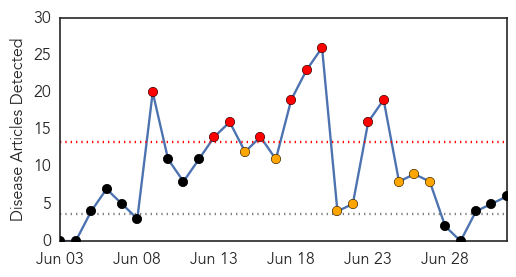
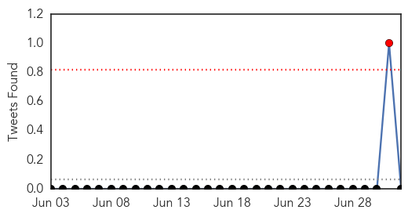
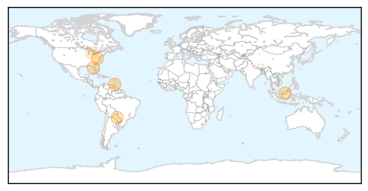
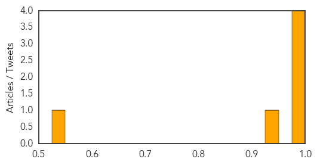

Dengue Fever
30-Day Web Trend
3 alerts, 0 warnings

30-Day Twitter Trend
3 alerts, 0 warnings

Article Locations

Article Confidences

Top Articles:
- 0.968
- Maharashtra tops in dengue prevalence
- 0.950
- Minister of Health weighs in on chikungunya virus in Cayman
- 0.949
- Monsoon maladies: Diseases lurk around
- 0.915
- Dengue deaths more than thrice last year’s
- 0.889
- The Nation's Health: Some Gains, But No Big Wins
- 0.873
- 7 die of dengue in North Cotabato, Maguindanao
- 0.872
- Zoonotic diseases ignored in developing world
- 0.869
- Doctors told to carry out dengue diagnosis if patients have fever – BorneoPost Online
- 0.845
- Dengue surveillance: Health dept vows action against those skipping cabinet meet
- 0.828
- Task force lists its priorities - Nation
- 0.815
- Another toddler contracts JE - Nation
- 0.602
- Six hotspots in Ampang Jaya - Community
Top Tweets:
-
No tweets found for Jul 02, 2014
Chikungunya
30-Day Web Trend
9 alerts, 7 warnings

30-Day Twitter Trend
1 alerts, 0 warnings

Article Locations
Article Confidences
Top Articles:
- 0.999
- Sharp rise of chikungunya virus cases in the Caribbean
- 0.998
- Cayman's first chikungunya case confirmed
- 0.996
- W.Va.’s 1st case of mosquito-borne chikungunya confirmed
- 0.993
- News Scan for Jul 02, 2014
- 0.943
- First chikungunya case confirmed in Pinellas
- 0.531
- Chikungunya in Dominican Republic sickens Michigan teacher
Top Tweets:
-
No tweets found for Jul 02, 2014